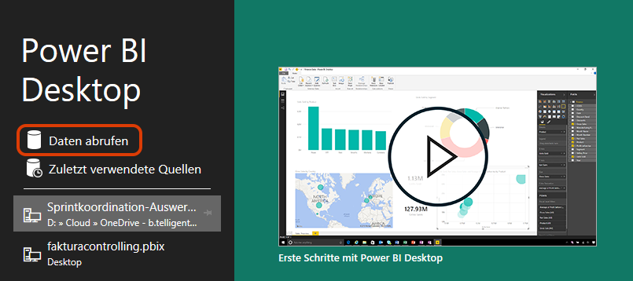
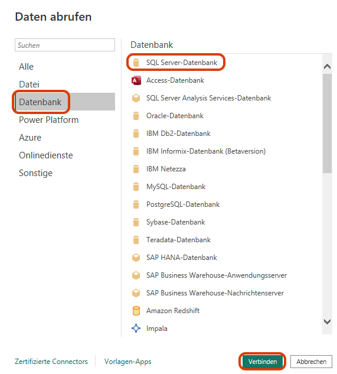
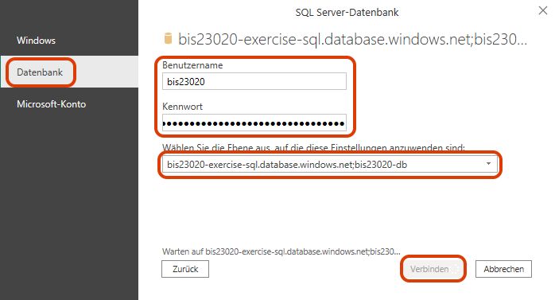
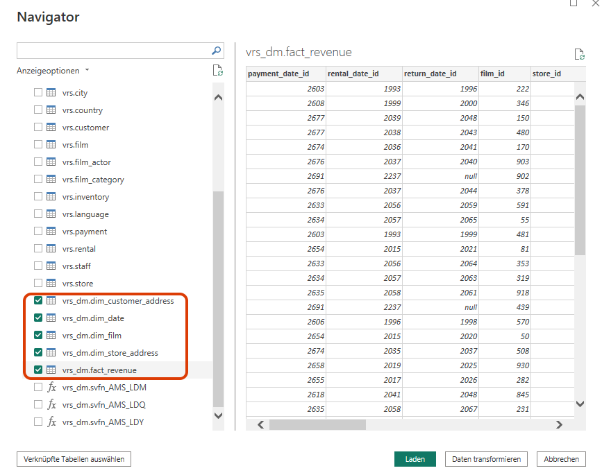

Übung Business Intelligence
Aufbau eines Dashboards
Aufgabe: Sternschema in Power BI laden
Installation von Power BI
Wir arbeiten mit Power BI Desktop. Dieses können Sie hier herunterladen: Microsoft Store
Beim ersten Start verlangt Power BI nach einer Anmeldung. Nutzen Sie hier die Benutzerdaten Ihrer Gruppe (biXXXXX@hshannoverde.onmicrosoft.com und Passwort)
Aufgabe: Sternschema in Power BI laden
Verbindung zum Datenbankserver herstellen
- Stellen Sie nun eine Verbindung zu Ihrem Sternschema her.
- Dazu klicken Sie direkt im Startscreen auf "Daten abrufen".
- Wählen Sie dann "Datenbank", "SQL Server-Datenbank" und klicken Sie auf "verbinden".
- Tragen Sie dann Ihre Zugangsdaten zu Ihrer Datenbank ein.
- Als Datenkonnektivitätsmodus wählen Sie "Importieren".


Aufgabe: Sternschema in Power BI laden
Verbindung zum Datenbankserver herstellen

Aufgabe: Sternschema in Power BI laden
Tabellen auswählen
Wählen Sie alle Tabellen aus, die sich im Schema "vrs_dm" befinden. Klicken Sie anschließend auf "Laden".

Aufgabe: Sternschema in Power BI laden
Beziehungen zur Datumsdimension aufbauen
Die Fremdschlüsselbeziehungen vom Fakt zu den drei Dimensionen kann Power BI aufgrund der gleichlautenden Spaltennamen automatisch herstellen. Das klappt bei den Beziehungen zur Datumsdimension nicht. Hier müssen Sie selbst nachhelfen.
Wechseln Sie dazu in die Modellansicht.